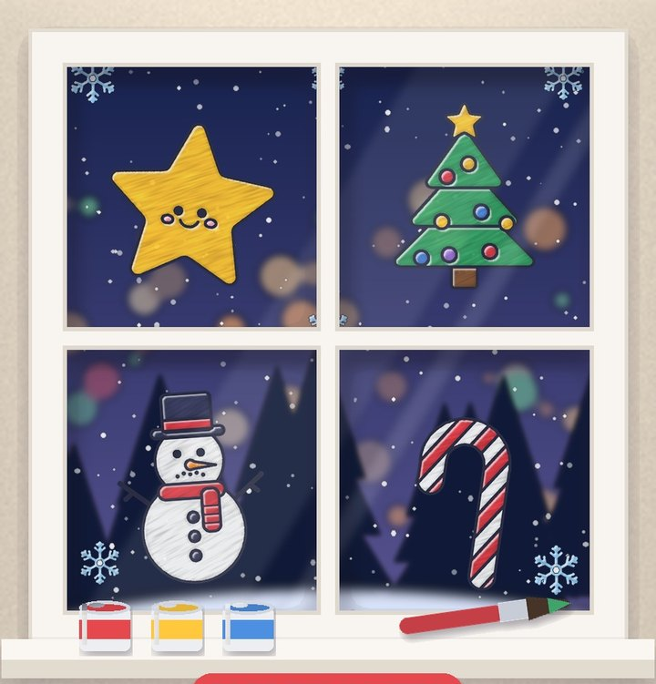
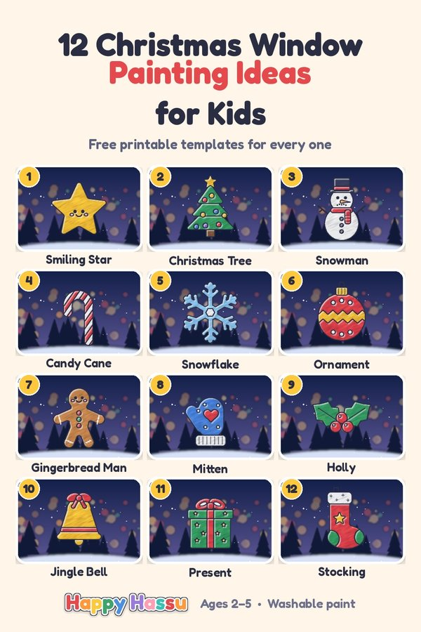
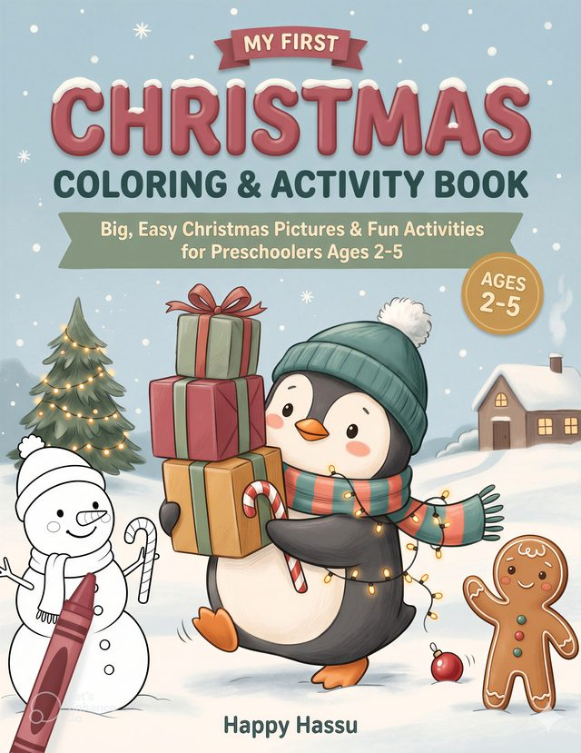
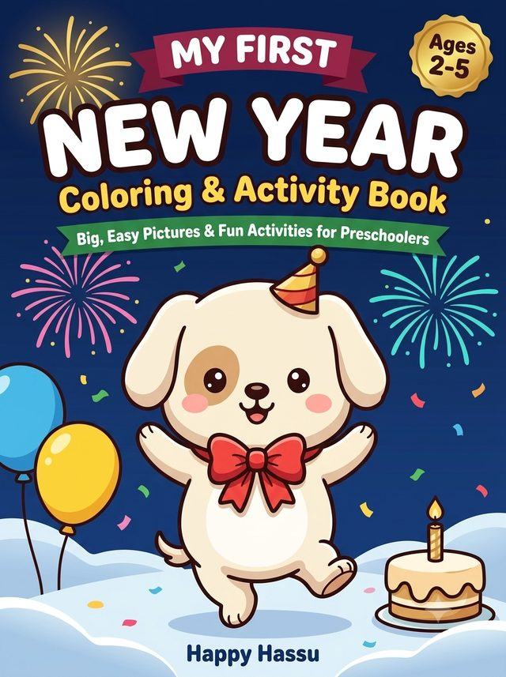

Christmas Window Painting for Kids
12 free printable templates with big, simple shapes that toddlers and preschoolers can actually fill in. Tape one outside the glass, paint inside, and wipe it all off in January.
Download the 12 templates (PDF)Free for personal and classroom use. US letter, prints fine on A4.
How to do it with a toddler
Print a design
Pick one or two. Regular paper is fine.
Tape it outside
Tape it to the outside of the window, facing in, so you can see the lines through the glass.
Trace & paint
A grown-up traces the lines with a paint pen. Little ones fill the shapes with washable paint.
Wipe it off
Warm, soapy water and a sponge when the holidays are over.
Tip: mix a few drops of dish soap into washable tempera paint. It sticks to the glass and wipes right off.
What's inside
Smiling star, Christmas tree, snowman, candy cane, snowflake, ornament, gingerbread man, mitten, holly, jingle bell, present and stocking, one big design per page.

Rainy day? Try a coloring book

My First Christmas Coloring & Activity Book
See it on Amazon
My First New Year Coloring & Activity Book
See it on AmazonWant 6 more free coloring pages? Get the free holiday pack.